[Introduction]
In this publication on the Analysis of Binaries in Embedded Systems, some tools and methodologies used to carry out a practice of this type will be shown. In this case, the target embedded system corresponding to the D-LINK brand, where with a simple methodology, we will look for vulnerabilities that can be exploited both remotely and internally. The objective of the publication will be to show the environment for static and dynamic analysis of binaries, using dedicated systems such as AttifyOS.The first step or starting point will be the download of the firmware to analyze https://support.dlink.com/ProductInfo.aspx?m=DIR-640L and as an addition, we leave the reader two options to set up the analysis environment depending on your level of tolerance and patience.
Option 1: The simplest way and to avoid compatibility errors with the host system and its binaries, there is the operating system called AttifyOS (https://www.attify.com/attifyos), where it already contains an extensive list of tools for the analysis of IOT / Embedded systems.
Option 2: This option is for those who want to have a hard time and gauge their own level of tolerance and patience. I personally recommend it when it is necessary to fully understand the whole process, doing "real hacking" and installing everything separately.
[For now to avoid frying some brains, we will continue with the first option]
[Device]
The DIR-640L Wireless N300 SOHO VPN Router device is a bit old, but for this post it is more than enough old but still contains crashes!.Some patches applied in this version (DIR-640LAx_FW102b02) Download Firmware Here
* Fixed device cannot allow clients to access Internet through PPTP/L2TP connection issue.
* Fixed WPS issue.
* Fixed IPSec NAT-T issue
* Fixed manual PPTP/L2TP remote IP range subnet checking issue
* Fixed IxChariot cannot test when using Tx with Rx multi-pairs at same time
* Fixed stress testing low session issue
[Decompile]
Once the firmware is obtained, the first thing we must do is find a way to extract all the contents of the DIR-640LAx_FW102b02.bin file. We will achieve this using the Binwalk tool, which will help us extract images, binaries, file systems, etc.$ binwalk -eM DIR-640LAx_FW102b02.bin
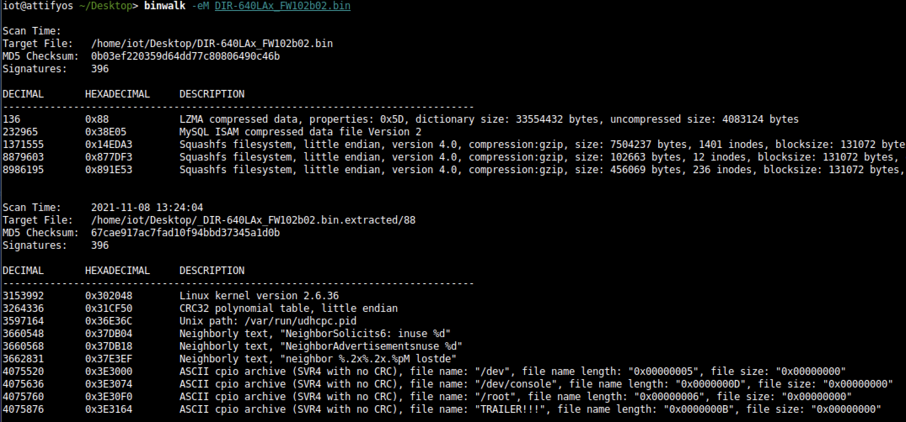
Looking in the extracted directories (squashfs-root-0), we found three interesting mdb, mydlink_signin_add and mydlink_signup_add. Maybe these binaries don't have vulnerabilities that can be exploited remotely but, as mentioned at the beginning of the post. The goal is analysis. In any case, the existence of security problems is not ruled out.
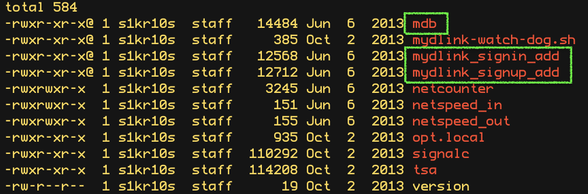
We get a bit of information from the binaries with the command file.
$ file mdb
$ file mydlink_signup_add
$ file mydlink_signin_add
$ file mydlink_signup_add
$ file mydlink_signin_add
1. 32-Bit ELF Binaries
2. MIPS architecture, MIPS-II
3. Interpreter /lib/ld-uClibc.so (we must load this library for further analysis)
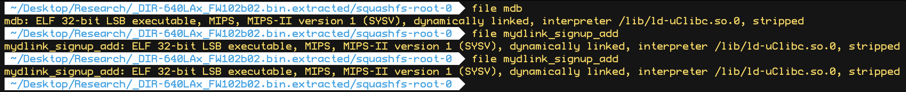
With this previous information, we have already moved on to the static analysis using IDA and Ghidra. These tools can be installed separately where it is the most comfortable for the investigator. This time the environment consists of a Windows 7/10 with IDA and Ghidra software on MacOS for convenience.
With that said, we move on to loading the mydlink_signin_add binary in the debuggers. When the loading process finishes, we make some improvements to the code, such as renaming the main() function with its necessary arguments, fixing .text/.data/.rodata sections, assigning the correct data type to the variables and so on. Same new name to the variables used. Carrying out these small adjustments will help us to better understand when analyzing the code of the binary in question.
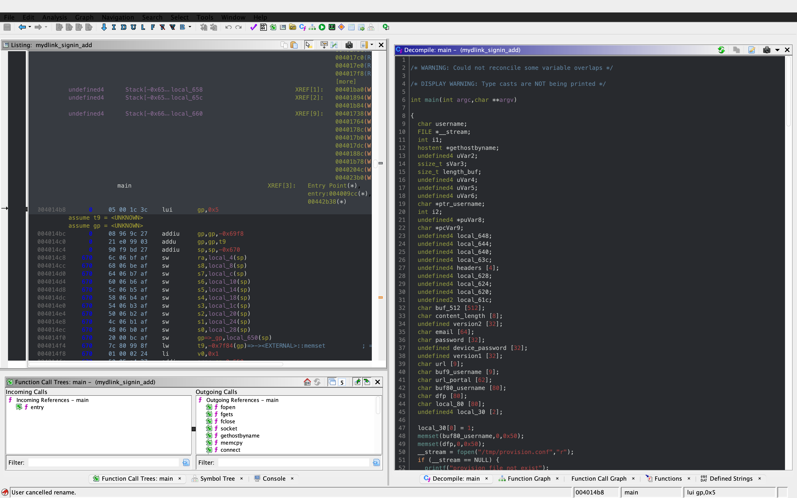
After investing a good time in the small adjustments mentioned above, the first way to get valuable information about the code to be analyzed is to identify functions that are considered dangerous, where a small error in their implementation can leave the device vulnerable. To do this we, execute a custom script and in this way we will have an overview of where our possible starting points for the analysis of the binary.
The result of the identification shows a series of potentially dangerous functions marked with a red dot, if some of these functions digest information manipulated by the user, it could be facing a potential vulnerability of the device. This requires tracing the path of the information received by the function itself and identifying at which point (if it exists) code can be injected to use the function differently (the net definition of to Hack, or to hack).
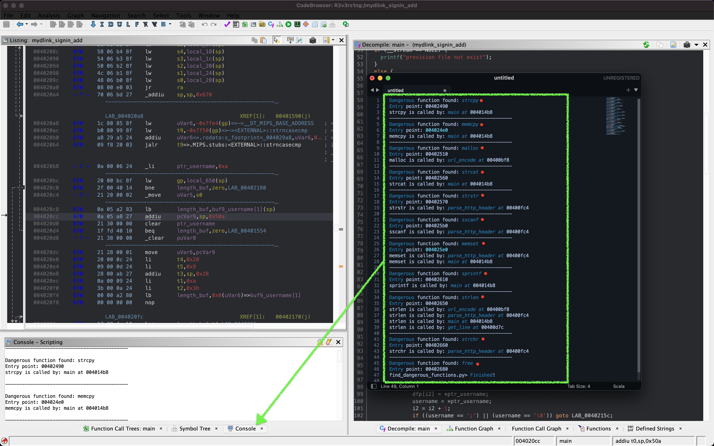
The above about dangerous functions will remain for the reader as a good example of good practice for analyzing binaries.
Working on the static analysis of the main() function, the following piece of code was identified that contains an error in the logic that will later trigger the jackpot vulnerability. Before you can explain what is happening here, can you identify the fault?
Before explaining the code and the vulnerability, it is necessary to understand how the copy of the data is in memory. In itself, the user string is copied to a calculated address, this calculation is two byte lower than the original data.
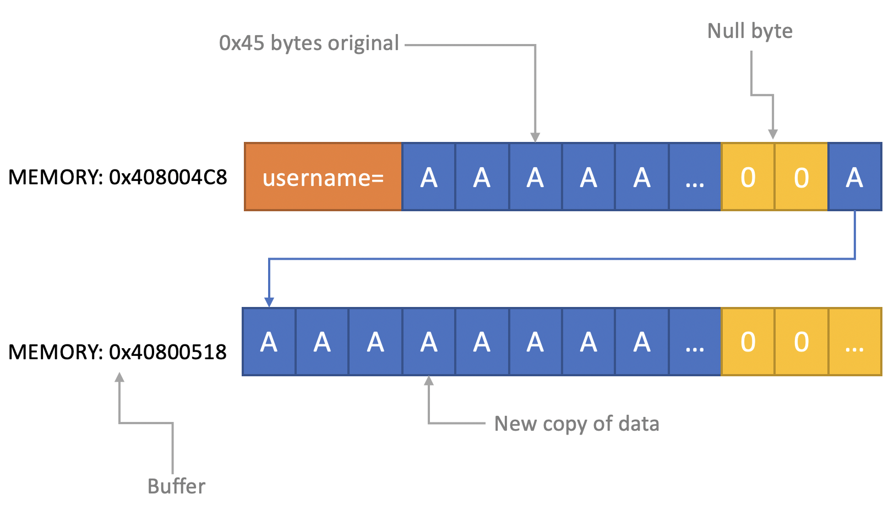
[Static Analysis]
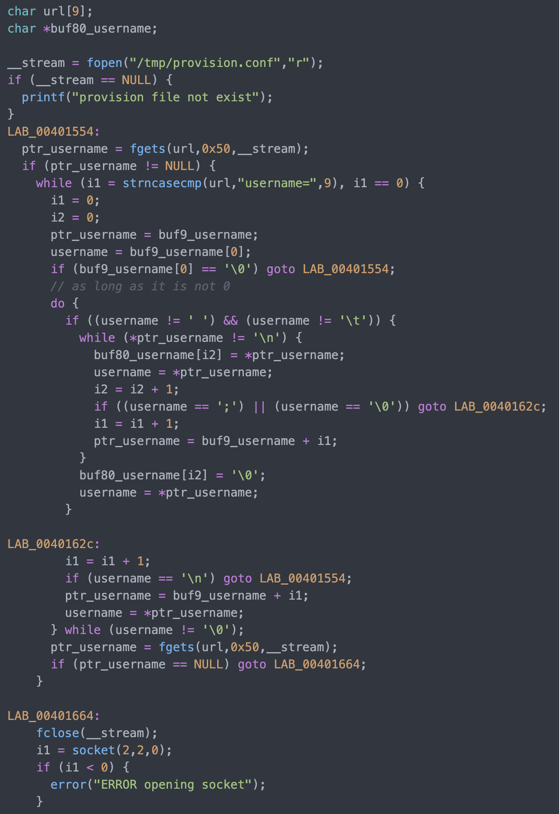
If you've already identified the vulnerability, congratulations!
For those who cannot see the vulnerable pattern yet, we will analyze in detail and explain each part of the code until we find the vulnerability, and then we will go into dynamic analysis mode to verify our theory.
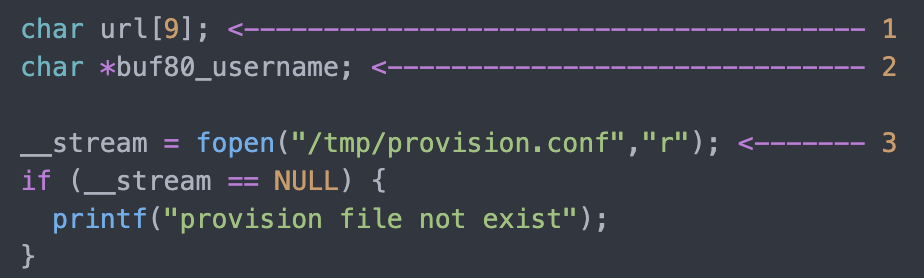
Line (1) variable that stores the url read from the configuration file, the assigned size is nine positions or nine bytes, since a variable of type char each position occupies one byte in memory. (more information https://www.geeksforgeeks.org/data-types-in-c/). Line (2) Pointer used as Buffer that will be used to store the username value and Line (3) Opens the provision.conf file in the temporary directory in read mode.
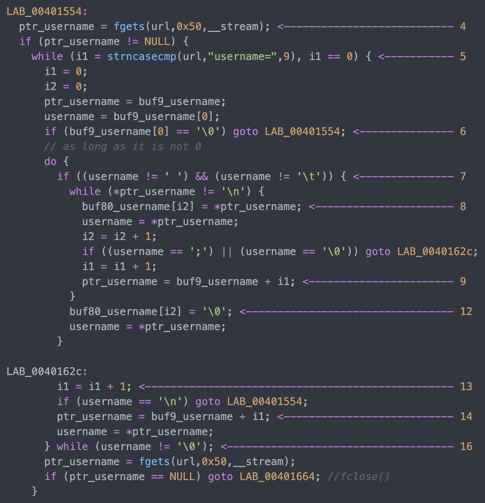
In line (4) the url buffer saves the information read from the "provision.conf" file and checks if it is different from NULL, then in (5) it validates if the string username= exists in the url buffer, (6) and (7) validates that the username variable has a value.
Now from line (8) to (9) there is a loop, which goes through the user string and then copying byte by byte in buf80_username and using i2 as an incrementing index and in turn validating that the user string contains the characters from ; or null to exit the copy stream. Lastly, add a string term \0 to user.
The problem is found in line (13), where the index i1 that is used to traverse the user chain in line (14) is incremented again. Here it should take as a value a \0 of the user's string term and thus exit the loop (16).
Now what would happen if we send a username with a length of 0x46 bytes?
What would happen is that when sending 0x46 bytes it would step on a \0 and when it is increased again (13) it no longer takes the value \0 to exit the cycle, but takes the value of the data sent which is A's, and for this reason the cycle remains infinite until all the memory of the stack is corrupted.
[Dynamic Analysis]
Before we start with the dynamic analysis and check what was explained above, we need to configure a few simple things to be able to debug and that the binary runs without problems.As we already know that it contains MIPS architecture, we use the qemu emulator from AttifyOS to execute the binary. The result of the execution shows that it needs a library /lib/ld-uClibc.so.0. This is very common when such a binary is to be executed.
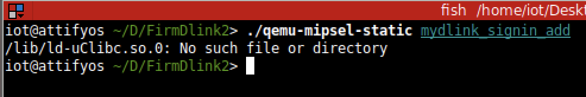
The next step is to load the necessary libraries and for this we have 2 options.
1. Load the libraries in the root of the system
2. Use chroot to call the libraries locally (recommended)
The following bash script is to execute the binary and leave it in standby mode on port 1337 to be able to take the process remotely with IDA.
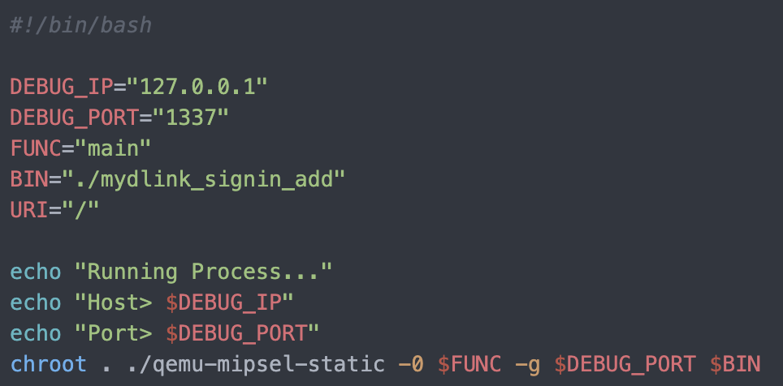
| Variable | Description |
|---|---|
| DEBUG_IP | localhost address |
| DEBUG_PORT | port listen 1337 |
| FUNC | function to load |
| BIN | path and name of the binary |
| URL | web path |
After executing the script, the process is waiting to be taken from the IDA debugger.
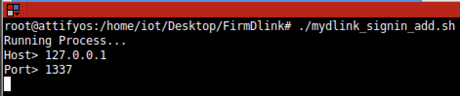
The information printed from the IP and Port script is used to configure the Remote GDB Debugger option, where hostname is the IP of the machine that is executing the script, and the Port is the service that is listening. Then the next step is to run the debugging process in IDA with the green arrow or directly with the F9 key.
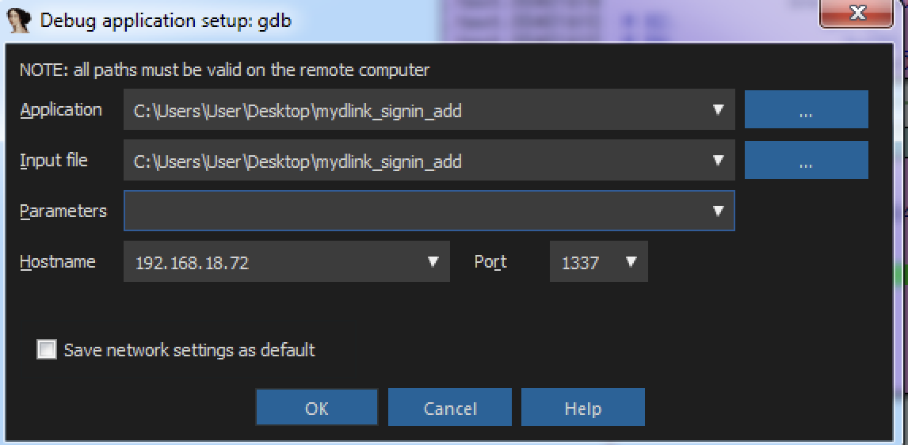
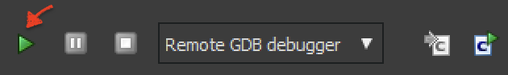
With the above, it is now possible to start a dynamic analysis of the binary and to verify the vulnerability, looking at the memory in real-time. However, first it is necessary to create the provision.conf file inside the ./tmp/ directory of the binary with the necessary bytes.
The file is generated with the following information; The username as a variable for the condition to be met and enter the validation with a value in bytes of size 0x46 or 0x70 in decimal to cause the error.
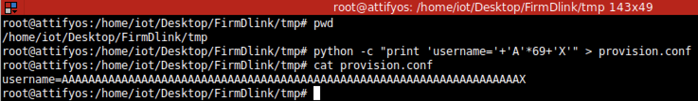
[Summary]
To close the article on "Introduction to binary analysis in embedded devices" here is an image of the main() function that contains the routine with the vulnerability.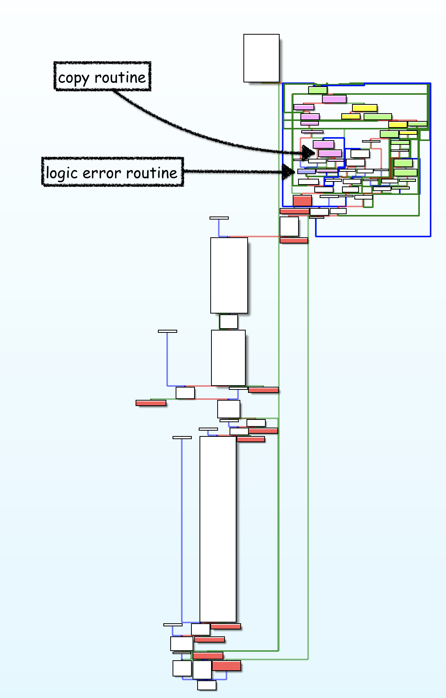